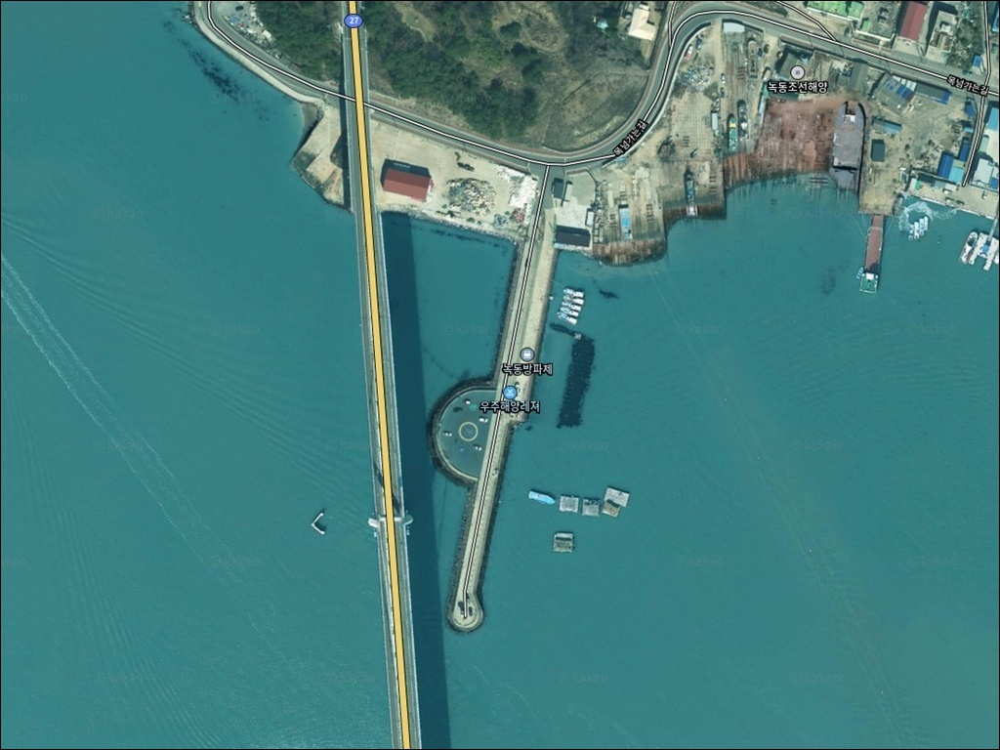
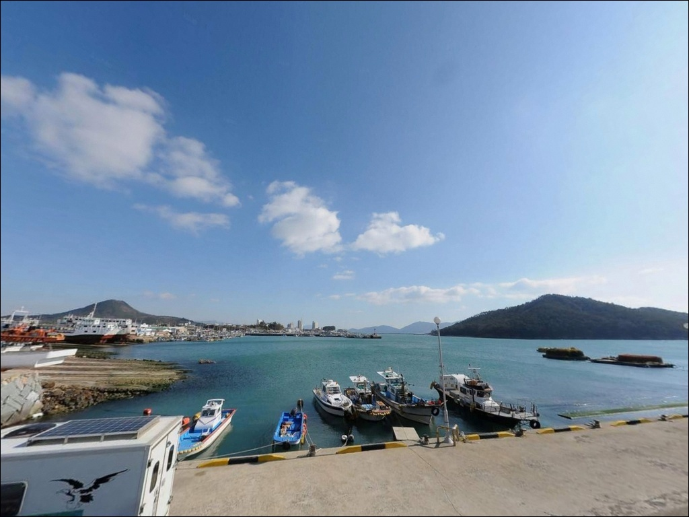
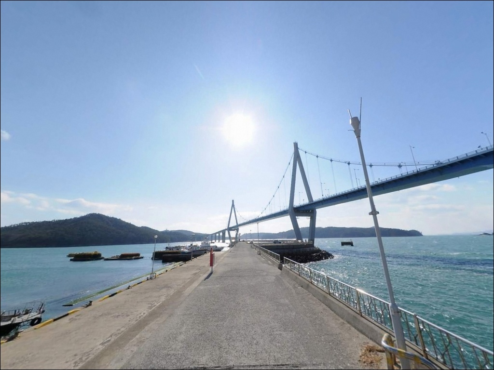
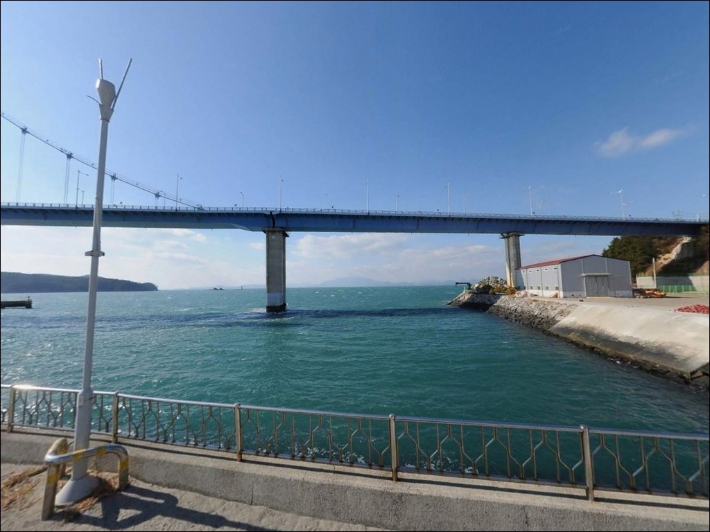
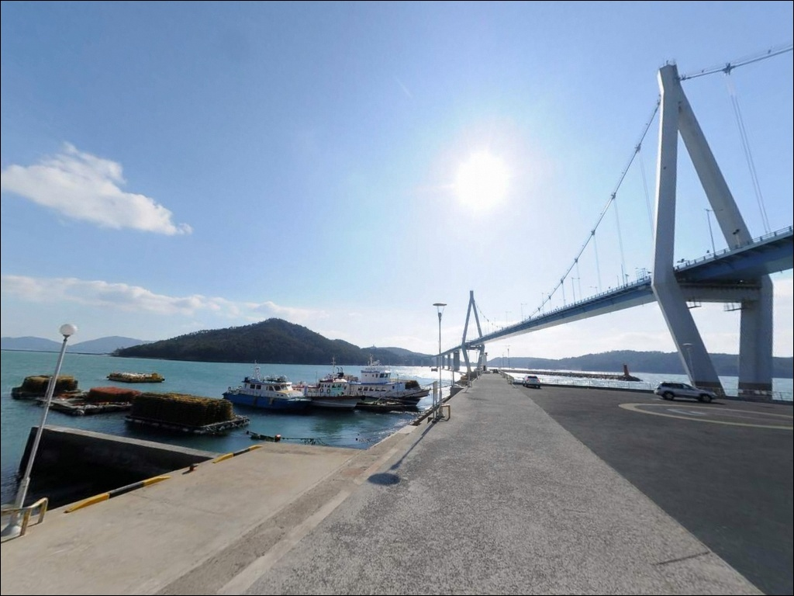
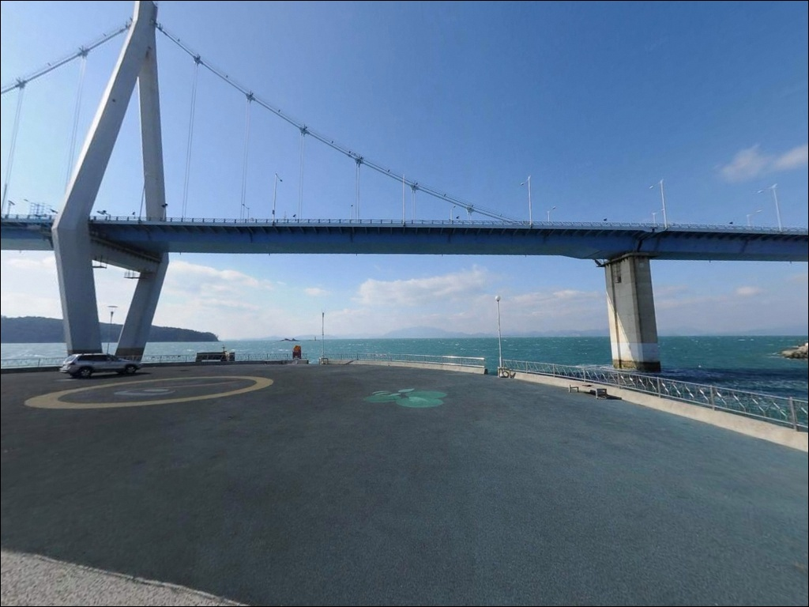
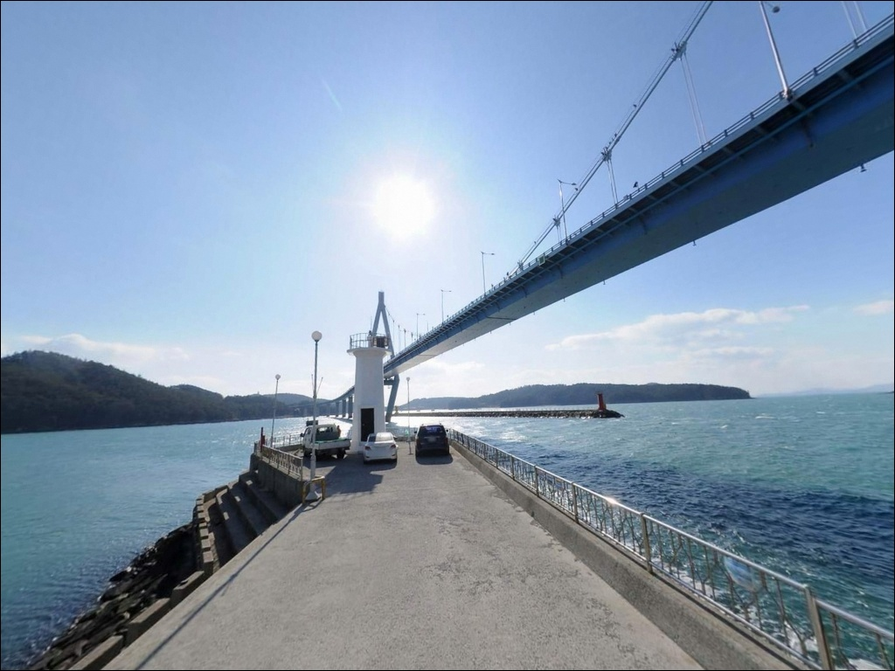
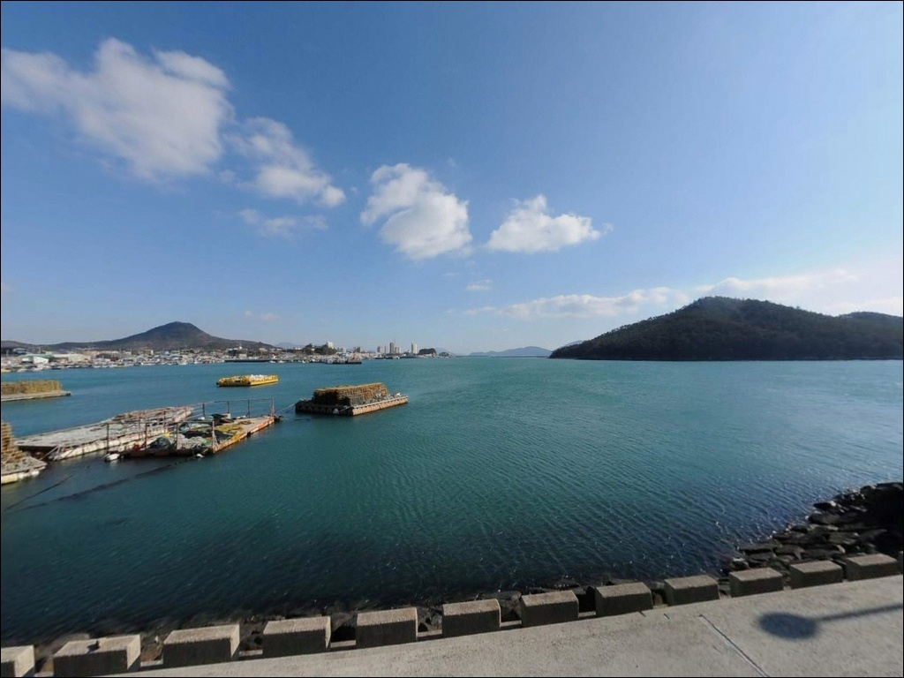
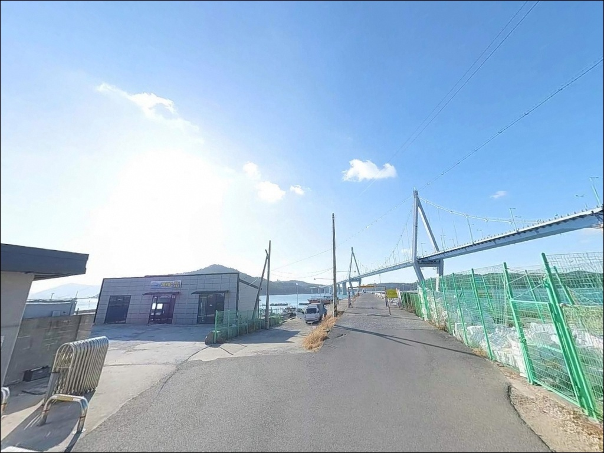

물때 상관없이 조류 흐르는 고흥 녹동방파제, 뻘바닥 수심 12m 공략
이 페이지에는 광고(제휴 링크 포함)가 있으며, 광고 링크를 통해 구매하면 운영자가 판매 수익 또는 수수료를 받을 수 있습니다. 포인트 사진: 카카오맵 스카이뷰·로드뷰. 이 페이지의 지도·사진 이미지는 카카오맵의 실제 서비스 이미지와 다를 수 있습니다.


포인트 안내
녹동방파제
전남 고흥군 도양읍 봉암리 2665-2
녹동방파제를 처음 찾는 낚시인이
가장 많이 놓치는 판단이 있습니다.
선박 입출항 방향을 확인하지 않고
자리를 잡는 것입니다.
국가어항 특성상 대형 어선과 여객선이
수시로 항로를 오가며,
낚싯줄이 항로와 겹치면
채비를 즉시 수거해야 하는 상황이 벌어집니다.
이 글은 녹동방파제의
진입 동선과 주차 여건, 낚시 지형 분석,
스타일별 공략 조건에 집중합니다.
조황 단정이나 특정 어종 보장은
이 글의 범위에 포함되지 않습니다.

1. 진입 동선과 차량 접근성
녹동방파제는 국도 27호선을 통해
소록대교 방면으로 진입한 뒤
녹동항 내부로 차량을 들이는 방식으로 접근합니다.
진입로 전 구간이 포장도로이며
도로 폭이 넉넉하고 급경사 구간이 없어
승용차부터 대형 SUV, 캠핑카까지
진입에 무리가 없는 구조입니다.
항구 내부까지 차량이 들어갈 수 있고
회차 공간도 항 내부 공영주차장과
방파제 초입 공터에서 충분히 확보됩니다.
방파제와 가장 가까운 주차 후보지는
녹동항 공영주차장이며,
수산물시장 인근 공터와
방파제 하단 노상 라인도
차량 대기에 활용됩니다.
항내 도로는 대형 선박 하역 차량과
여객터미널 이용 차량이 함께 이동하는 구간입니다.
낚시 장비를 내리거나 이동할 때
차량 통행 동선을 막지 않는 것이 기본 매너입니다.

2. 야간 체류 여건과 차박 환경
녹동방파제 일대는 여객터미널과 수산물시장,
식당가가 항 주변에 밀집해 있는 구조입니다.
야간에도 가로등과 상가 불빛이 지속되고
낚시객·관광객 유동 인구가 많아
완전한 고립형 차박 환경은 아닙니다.
차박 거점으로는 공영주차장이 가장 현실적입니다.
공간이 넓고 야간 조명이 확보되어
차 안에서 대기하거나 쉬기에는 불편함이 없습니다.
다만 주변 소음과 불빛이 상시 있는 환경이므로
조용하고 어두운 분위기를 선호하는 낚시인에게는
맞지 않는 차박 스타일입니다.
소록도 수로 방향에서 들어오는 바람은
날씨에 따라 강해질 수 있습니다.
기상청 해상 예보를 출발 전날 확인하고,
파고가 높은 날은 외항 방면 접근을
재고하는 것이 기본 판단 기준입니다.


3. 주변 편의시설과 인프라 현황
녹동방파제는 편의시설 접근성이
고흥권 방파제 중 가장 높은 수준입니다.
도보 5분 거리 이내에 공중화장실이 있으며,
24시간 편의점과 수산물시장, 식당가가
항구 바로 인근에 밀집해 있습니다.
도양읍 시가지로 이동하면
마트, 주유소, 낚시용품점을 이용할 수 있습니다.
전기차 충전시설도 녹동항 주차장 구역 내에
24시간 운영 중인 것으로 확인됩니다.
응급 상황 발생 시 녹동 일대에
의료시설이 위치해 있어
접근성 면에서 불안 요소는 적은 편입니다.
낚시 소품이 부족하다면
항 인근 낚시점에서 출조 당일 보충이 가능합니다.
이 포인트는 사전 자급 체제를 갖추지 않아도
현장 조달이 가능한 몇 안 되는 방파제입니다.

4. 진입 전 반드시 챙겨야 할 준비사항
녹동방파제는 물때에 관계없이 낚시가 가능한
구조적 강점을 가진 포인트입니다.
다만 선박 입출항이 야간에도 이루어지는 항구이므로
낚시 방향 설정이 중요합니다.
채비를 항로 방향으로 던지지 않도록
입장 전에 선박 통행 구간을 먼저 파악하는 것이
기본 순서입니다.
발판이 다소 높게 형성된 방파제 구조상
뜰채는 필수 장비입니다.
야간 낚시 시에는 미끄럼 방지화와
헤드랜턴을 반드시 챙겨야 합니다.
구명조끼는 단독 출조나 야간 낚시 상황에서
착용을 기본으로 하는 것이 해양경찰청 안전 수칙입니다.
관광객과 낚시객이 함께 이용하는 항구인 만큼
낚시 채비 잔존물과 쓰레기는
반드시 수거해야 합니다.
주변 상인과 어민과의 마찰을 줄이는
기본 매너가 이 포인트에서 특히 중요합니다.

5. 지형 기반 낚시 여건 분석
녹동방파제가 고흥권에서 독보적인 포인트로
꼽히는 이유는 조류 구조에 있습니다.
소록도와 녹동항 사이에 형성된
물골이 상시 조류를 만들어내며,
물때에 관계없이 조류가 살아 있는 환경이
지속되는 구조입니다.
수심은 방파제 발판 가까운 구간 약 7m,
원투 구간은 12~13m 수준으로 깊게 형성됩니다.
해저는 뻘바닥이 넓게 깔려 있는 구조로
바닥층 채비 운용에 유리한 지형입니다.
외항 쪽에 테트라포드가 없어
캐스팅 방해 없이 원거리까지 채비를 보낼 수 있습니다.
방파제 끝단과 꺾이는 구간은
조류 변화가 뚜렷하게 나타나는 자리입니다.
외해 쪽과 내항 쪽 모두 공략이 가능한 구조로
자리 선택에 따라 노릴 수 있는 어종 패턴이
달라지는 편입니다.
출조 전에 녹동방파제 조황을
반드시 검색해 최신 정보를 확인하는 것이 좋습니다.
녹동방파제 외항 끝단은 물골 조류를 정면으로 받아
릴찌낚시 채비가 자연스럽게 흘러가는 자리입니다.


6. 조류가 살아날 때 달라지는 낚시 스타일
뻘바닥에 깊은 수심, 상시 조류 흐름까지
이 세 가지 조건이 맞물리는 포인트에서
가장 잘 어울리는 낚시는
릴찌낚시입니다.
조류를 타고 흘러가는 막대찌 채비가
물골 구조에 잘 맞으며,
감성돔을 주 대상으로 방파제 끝단과
꺾이는 구간을 중심으로 공략합니다.
원투낚시는 뻘바닥 지형 구조에
잘 맞는 방식입니다.
붕장어와 보구치를 기대할 수 있으며,
외항 전역에서 장타 운용이 가능합니다.
낚싯배 입출항 방향을 피해
채비 방향을 먼저 설정하는 것이 전제 조건입니다.
에깅과 루어는 뻘바닥 위 바닥층 운용에 적합합니다.
갑오징어, 주꾸미, 문어를 기대해 볼 수 있으며
에기를 바닥까지 충분히 내린 뒤
천천히 끌어오는 방식이 이 포인트에 어울립니다.
봄부터 가을까지 두족류 시즌이 이어지는 편입니다.
조류가 강하게 살아나는 물때에는
방파제 외항에서 삼치·방어 계열
회유성 어종을 노리는 쇼어지깅도
시도해볼 수 있습니다.
물때에 관계없이 조류가 흐르는 녹동방파제는
낚시 방식을 먼저 정한 뒤 자리를 선택하는 것이
이 포인트를 효율적으로 쓰는 방법입니다.

7. 대안 포인트와 플랜 B 동선
녹동방파제에 낚시 인파가 몰리거나
자리 여건이 여의치 않을 때
가장 먼저 고려할 대안은
녹동신항 끝바리입니다.
동일 해역을 공유하며 차량 진입이 가능하고
본 방파제보다 인파가 분산되는 편입니다.
소록대교를 건너 소록도 방파제로 이동하면
다른 환경의 낚시 여건을 경험할 수 있습니다.
다만 소록도 진입 시 국립소록도병원 구역 내
일부 구간에 이용 제한이 있을 수 있어
사전에 진입 가능 구간을 확인하는 것이 먼저입니다.
거금대교를 건너 거금도 해안으로 이동하면
소규모 방파제들이 산재해 있습니다.
조용한 낚시 환경을 원한다면
거금도 초입 방파제 방면이 현실적인 대안입니다.
차박 분위기도 녹동항보다 한적한 편이라
낚시와 차박을 조용히 병행하고 싶다면
거금도 해안도로 일대를 플랜B로 잡는 것이 유효합니다.

물골 조류가 항상 흐르는 방파제,
준비만 잘 갖추면 사철 열려 있습니다
릴찌낚시나 에깅, 원투낚시 중 어떤 방식을 선호하든
녹동방파제는 지형 조건 자체가
복수 방식 운용에 열려 있는 구조입니다.
물때에 관계없이 조류가 흐르는 물골 덕에
타이밍 계산 없이도 낚시 여건이 유지되는
편이며, 편의시설과 주차 여건도
고흥권 방파제 중 가장 잘 갖춰져 있습니다.
다만 선박 항로 방향 파악 없이 들어서거나
외항 발판 높이를 감안하지 않으면
현장에서 불필요한 상황이 생길 수 있습니다.
항로 확인, 뜰채 준비, 구명조끼 착용,
이 세 가지를 출발 전에 갖추고 가면
녹동방파제는 고흥을 거점으로 삼는
어떤 낚시인에게도 맞는 포인트입니다.
차박 목적이라면 조용함보다는
편리함을 우선하는 낚시인에게 잘 어울립니다.
공영주차장에 차를 두고 방파제와
수산시장을 오가며 하룻밤 머무는 방식이
이 포인트와 가장 잘 맞는 여행 스타일입니다.